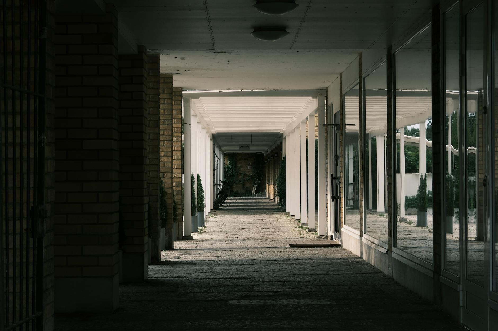

A modern városi lét egyik leggyakrabban figyelmen kívül hagyott, mégis legpusztítóbb tényezője a zajszennyezés. A folyamatos lüktetés, a motorok zaja, az ipari vibráció és az emberi tömeg moraja nem csupán kellemetlen kísérőjelensége a civilizációnak: ezek a hanghullámok biológiai szinten írják át idegrendszerünk működését. Ebben a zaklatott környezetben született meg az „akusztikus építészet” új, radikális ága, amelyet sokan a „csend sötét architektúrájaként” emlegetnek.
De mit jelent valójában a csend mint építőanyag, és hogyan képes egy tudatosan tervezett tér nemcsak a fülünket, hanem az elménket is átformálni?
A városi zajszennyezés krónikus stresszállapotban tart minket. A folyamatosan jelenlévő, 50-70 decibel feletti alapzaj megakadályozza a paraszimpatikus idegrendszer teljes ellazulását. A modern építészet sokáig kizárólag a látványra és a funkcionalitásra fókuszált, a hangszigetelést pedig csupán technikai kiegészítőként, nem pedig tervezési alapelvként kezelte.
A zajtól való megfosztottság azonban nem csupán a nyugalomról szól. A csend – a maga abszolút, tudatosan megtervezett formájában – képes felszabadítani a kognitív kapacitást, csökkenteni a kortizolszintet, és megnyitni az utat a mélyebb introspekció felé.
Az akusztikus építészet új hulláma nem csupán az utca zajának kizárását tűzi ki célul. A tervezők ma már a „hangszobrászat” eszközeit használják.
A legmodernebb épületek homlokzatain olyan parametrikus mintázatú panelek jelennek meg, amelyek matematikai precizitással törik meg és nyelik el a környezeti zajt. Ezek a textúrák nemcsak esztétikailag lenyűgözőek, hanem akusztikus „fekete lyukakként” működnek, amelyek egy belső udvarban vagy meditatív térben drasztikusan, akár 30-40 decibellel képesek csökkenteni a zajterhelést.
Az építészek mostanság a zajt „terelik”. Hasonlóan ahhoz, ahogy egy épület vet árnyékot a földre, úgy hoznak létre „akusztikus árnyékokat” olyan épülettömegekkel, amelyek elhajlítják a hanghullámokat a lakóterületek elől. Ez a fajta tudatos tervezés olyan csendes zónákat hoz létre, ahol a városi forgatag megszűnik létezni, és helyébe a természetes akusztika lép.
Mi történik az emberi tudattal, amikor a zaj megszűnik? A pszichoakusztika kutatói szerint a csend nem üres. Az úgynevezett „anekoikus” (visszhangmentes) kamrákban – ahol a zaj 0 decibelhez közelít – az ember előbb-utóbb elkezdi hallani a saját biológiai működését: a szívverését, a tüdő levegővételét, sőt, a vérkeringésének morajlását is.
A városi terek jövője nem a még fényesebb üvegfelületekben, hanem az akusztikus minőségben rejlik. Egy olyan világban, ahol az információáramlás és a digitális zaj sosem áll meg, az épített csend a luxus legmagasabb formája lesz.
A jövő városainak „akusztikus oázisai” – legyenek azok könyvtárak, parkok vagy lakóépületek – nem csupán fizikai menedéket nyújtanak. Ezek az épületek a modern ember „mentális szanatóriumai”. Az architektúra feladata immár az, hogy megvédje az egyént a túlterheltségtől, és teret biztosítson a tudat regenerációjához.
A csend sötét architektúrája tehát nem a zaj elől való menekülésről szól, hanem egy tudatosabb emberi létezés megteremtéséről. Amikor építészetileg megszűrjük a környezetünket, valójában az idegrendszerünket szabadítjuk fel a folyamatos készenléti állapot alól.
Ahogy a fénytervezés (lighting design) alapvetően meghatározza egy tér hangulatát, úgy az akusztikus tervezés az emberi tudat mélyrétegeit formálja. A csend – mint építőelem – az utolsó határvonal a városi káosz és az emberi elme békéje között. A jövő építészei nemcsak falakat emelnek, hanem csendet terveznek, hogy ebben a csendben újra önmagunkra találhassunk.
A kérdés már nem az, hogyan építünk nagyobbat vagy magasabbat, hanem az, hogy képesek vagyunk-e olyan környezetet alkotni, amelyben a csend végre meghallhatóvá válik. Ebben a sötét, de áldott akusztikus térben születhet meg a modern ember újfajta tudatossága.